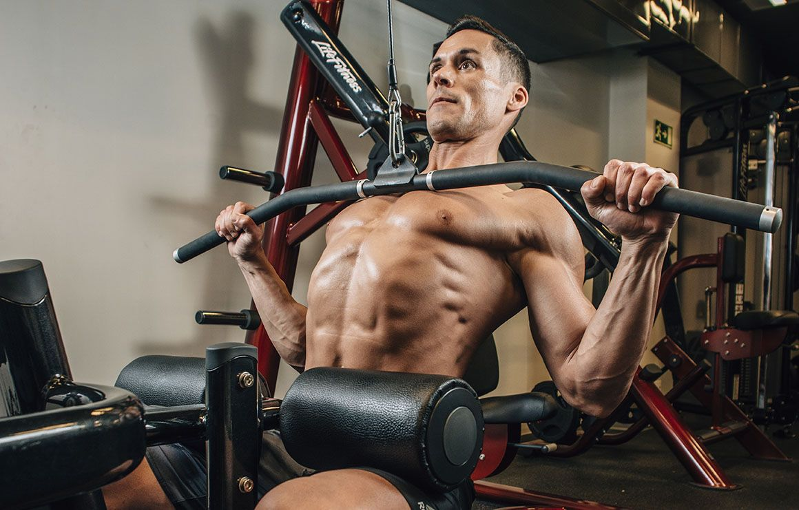
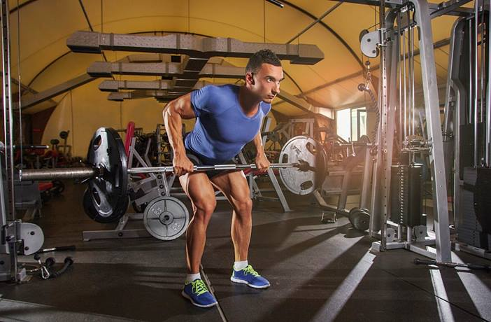
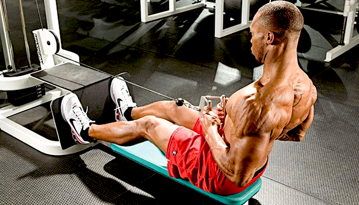
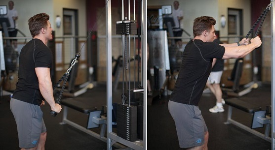

DORSALES
Los dorsales, o músculos dorsales, son un grupo muscular ubicado en la parte superior y media de la espalda, incluyendo el gran dorsal, el trapecio y el romboides. Son esenciales para movimientos como jalar, levantar y llevar los brazos hacia atrás y hacia el cuerpo. Fortalecer los dorsales es crucial para mantener una postura adecuada, prevenir lesiones y mejorar el rendimiento en actividades físicas. Literalmente todos los ejercicios en esta lista trabajan bastante bien los ya mencionados romboides y trapecios, por lo cual realizar ejercicios enfocados en estos últimos no es necesario en la mayoría de los casos si eres natural.
Jalón al Pecho
Empezamos la lista con uno de los 2 mejores ejercicios para los dorsales. El jalón al pecho imita el movimiento de una dominada pero con la posibilidad de ajustar el peso al adecuado para cada uno, a diferencia de las dominadas donde el peso minimo es nuestro peso corporal. Esto y sumado a que gasta menos enería y recluta solamente los musculos implicados lo convierte en un ejercicio indispensable para el desarrollo de la espalda. Puedes cambiar el tipo de agarre para enfocarte en distintos músculos, los más recomendados para la espalda son el agarre prono y neutro.
Remo con Barra
Uno de los mejores ejecicios para la espalda el Remo con Barra es indispensable en tu rutina de espalda, el cual debe realizarse en conjunto, antes o después de un jalón al pecho. Un ejercicio que debes hacer a máximo poder en el que puedes y debes levantar pesos exigentes para desarrollar grosor y tamaño en los músculos de tu espalda.
Dominadas
El ejercicio de calistenia más famoso y, para muchos, el mejor ejercicio para desarrollar fuerza en la espalda y varios músculos del cuerpo. Las dominadas son un ejercicio con peso corporal que también trabaja los músculos estabilizadores del core. Al ser un ejercicio compuesto, con peso corporal, puede resultar muy difícil e incluso imposible para principiantes, sumado a su exigencia calórica. Esto hace que este ejercicio no sea el más recomendado para ganar masa muscular, pero no quita que sea uno de los mejores ejercicios para hipertrofia y posiblemente el mejor ejercicio para la espalda en cuanto a fuerza y control se refiere.

Remo con Polea
Como su nombre indica, es una versión de remo realizada en polea. Es una muy buena alternativa al remo con barra, con la diferencia que este último se considera mejor por usar pesos libres, que según la ciencia es mejor para hipertrofiar. Esto no quita que sea un grande ejercicio para la espalda, y una muy buena alternativa si no te sientes cómodo, no puedes hacer remo o directamente no te gusta el remo con barra por alguna razón. Recalco que hacer este ejercicio no mermara tus ganancias ni mucho menos, es un gran ejercicio para el desarrollo de tu caparazón.
Pull Over en Polea
El pull over tradicional con mancuerna, es un ejercicio para dorsales, que también usa los pectorales, los triceps y los hombros, en otras palabras un ejercicio totalmente ineficiente y poco productivo siendo esto una lista de los mejores ejercicios de dorsales. Por eso te recomendamos que optes mil veces por un pull over en polea, el cual sigue reclutando músculos de empuje pero en menor medida y de forma mucho más segura. Este ejercicio se hizo un lugar en esta lista debido a su amplio rango de movimiento para el dorsal que lo lleva a ofrecer un muy buen aporte al desarrollo de este músculo.
